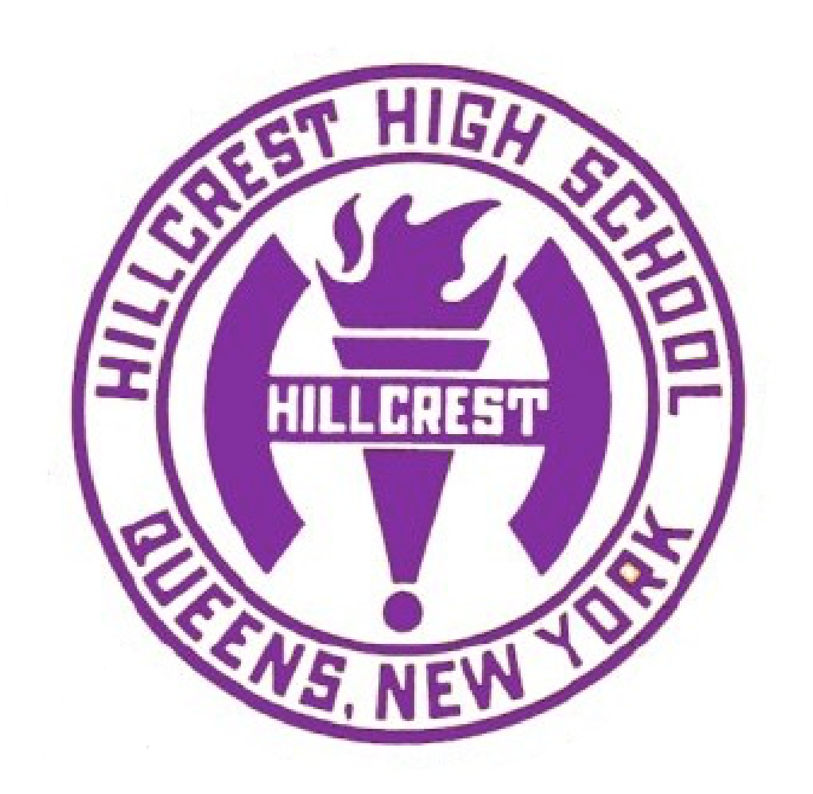

Welcome to Software Engineering
Software Engineering is class that teaches the aspects and physiology of computer science that allows students to learn the vigors of the field of computer science. Within the 3 years of this program, students will cover the basic programming languages using scratch, html, java, javascript. They will learn the syntax while also gaining the ability of implementing the syntax to other programming language. As their knowledge expands, students will have the ability of using what they have learned and create personal projects using what they have learned.